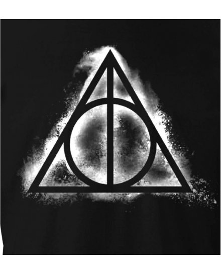
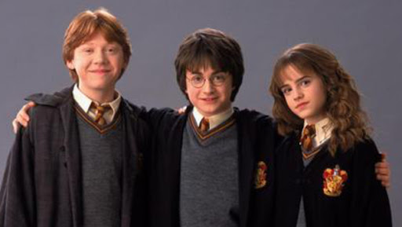
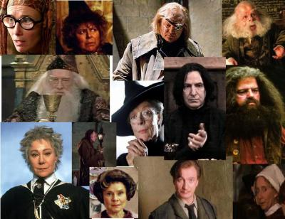
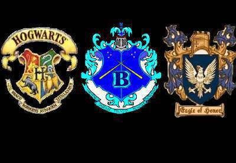

Le quidditch est le sport des sorciers et voici une vidéo sur le match Gryffondor vs Serpentard.:
Harry Potter et Edwidge sa chouette blanche.
Les chouettes apportent le courrier,sur cette image elles apportent la lettre d'admission de poudlard à Harry,elles sont beaucoup parce que l'oncle vernon,ne veux pas donner ses lettres a Harry.un jour la mer de Ron lui a envoyer une beuglante c'est une lettre qui cri sur la personne à qui on l'envoie.
Les reliques de la mort,cette image est juste le logo des reliques de la mort les reliques de la mort son la cape d'invisibilité,la pierre philosophale et la baguette de suros.
Harry,Rone et Hermione les trois amis principaux de l'histoire.
Les professeurs, le poste de deffense contre les force du mal fait que de changé de propriétère et à chaque fois le proffesseur qui a le poste est soit méchant soit ses un imposteur comme le professeur Lockart.
Les logos des trois écoles de sorciers,il y a poudlard,beauxbatons et durmstrang.